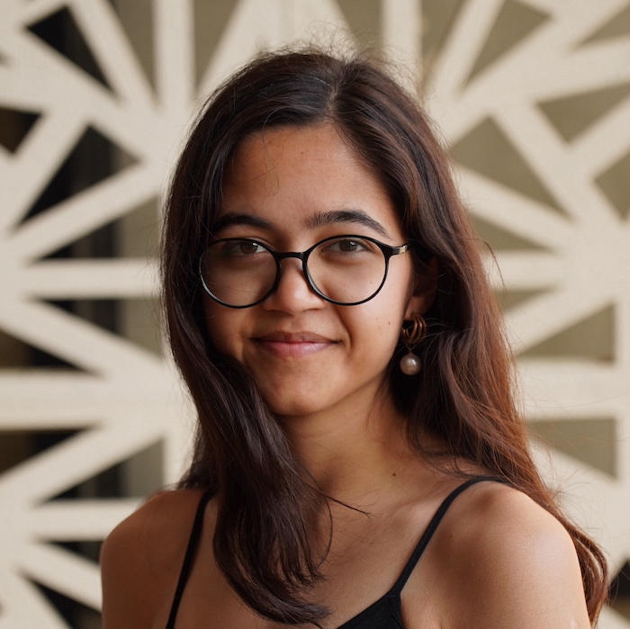
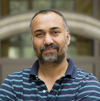
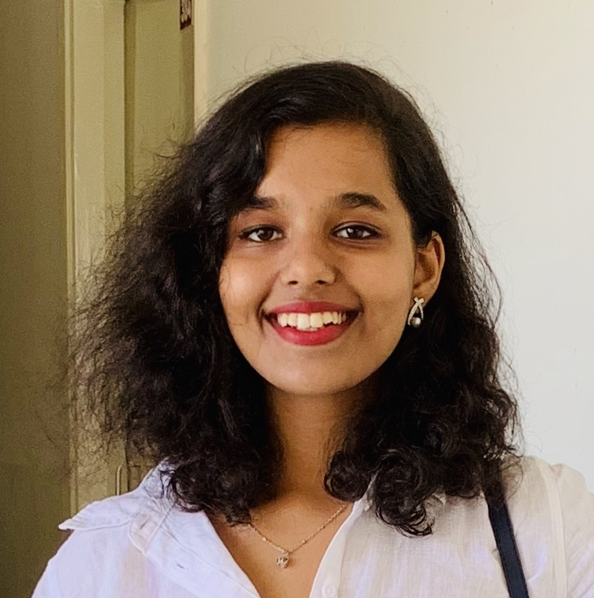
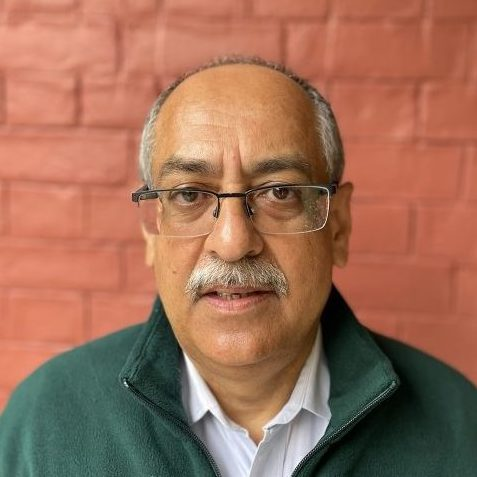
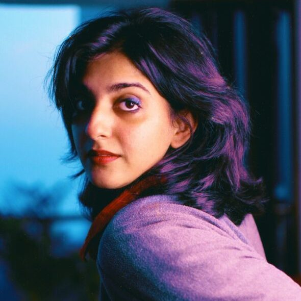
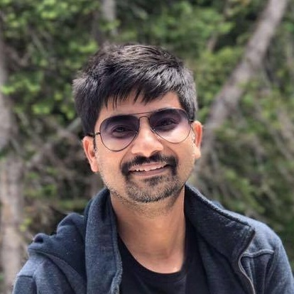
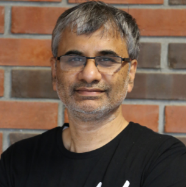
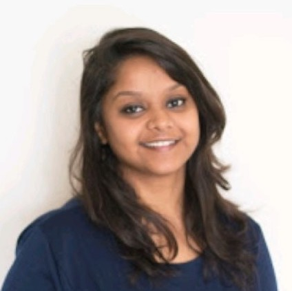
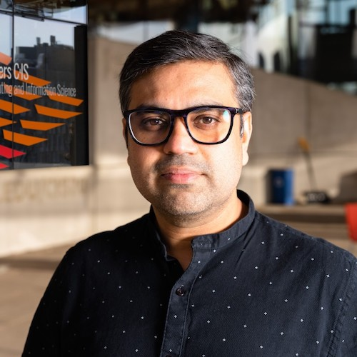

I have been extremely fortunate and remain grateful in having collaborated with and being mentored by amazing people. They have been instrumental in my research journey and continue to be massive sources of inspiration. Here are some of them, in order of the first time I met them (there is no way I can quantify the impact each one of them have had on me).








